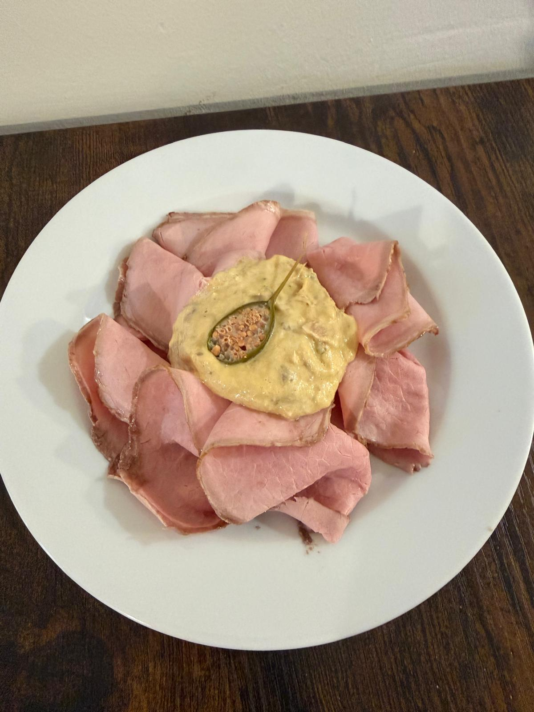

Gastronomia e bistrot Quadrilatero Romano, Torino Via della Consolata 7D Pranzo e cena
Tradizione piemontese, fatta in casa.
Pasta fresca, agnolotti e piatti della tradizione preparati nella nostra gastronomia, e serviti al tavolo nel bistrot di Via della Consolata, nel Quadrilatero Romano.

Una famiglia, un palazzo del 1715, cinque case.

Dal 2006 la nostra famiglia accoglie ospiti ad Ai Savoia, un’idea nata durante un viaggio in Scozia. La Real Cucina è il quinto capitolo: la stessa ospitalità di casa, portata in tavola.
Ai Savoia ha sede nel palazzo di Via del Carmine affacciato su Piazza Savoia, parte del complesso di Palazzo Saluzzo Paesana, costruito nel 1715. Oggi la famiglia porta avanti cinque case, tra camere, foresteria, caffetteria e cucina.
In gastronomia prepariamo pasta fresca, agnolotti, sughi e dolci con prodotti freschi e di stagione. Nel bistrot li serviamo a pranzo e a cena, oppure li incartiamo da portare via.
- 1715
- Palazzo Saluzzo Paesana
- 2006
- Apre Ai Savoia
- 5
- Case della famiglia Ai Savoia
La carta
I piatti del giorno sono scritti sulla lavagna all’ingresso. I piatti della gastronomia si possono anche portare a casa.
Antipasti della tradizione
Vitello tonnato con cappero
Fettine di vitello rosa e salsa tonnata: l’antipasto piemontese per eccellenza.
Pasta fresca e primi
Tagliatelle al ragù bianco
Il ragù senza pomodoro, dove il sapore della carne resta in primo piano.
Gnocchi con gamberi e zucchine
Un primo di mare, con le zucchine a dare dolcezza ai gamberi.
Agnolotti e specialità piemontesi
Ravioli con salsa
Pasta ripiena servita con la sua salsa: il primo più classico della casa.
Secondi di carne e di pesce
Arrosto con patate al forno
Carne arrosto affettata, con il suo fondo e le patate dorate al forno.
Baccalà con crema di zucchine
Il baccalà accompagnato da una crema vellutata di zucchine.
Contorni di stagione
Verdure del periodo
Preparate in modo semplice, per accompagnare i secondi.
Dolci artigianali
Classico tiramisù
Mascarpone, caffè e savoiardi, nella versione di sempre.
Piatti da asporto
La gastronomia, da portare via
I piatti della cucina, pronti da portare a casa. Chiamateci per sapere cosa c’è oggi.
Allergeni: chiedete in sala

Davanti all’obelisco di Piazza Savoia.
Le finestre del palazzo di Via del Carmine guardano Piazza Savoia e il suo obelisco, nel cuore del Quadrilatero Romano. L’obelisco ricorda le leggi Siccardi del 1850: sotto la prima pietra furono murati anche grissini, semi di riso e una bottiglia di Barbera.
Al civico 1F la Sala dei Marmi ospita la Caffetteria e Sala da Tè, con il camino e un dipinto di Vittorio Amedeo II. Completa la giornata, dal primo caffè all’ultima tazza di tè.
Camere delle Regine
OspitalitàLa Locanda dei Re
OspitalitàForesteria dei Savoia
Via della Consolata 4Caffetteria e Sala da Tè
Sala dei Marmi, Via del Carmine 1FLa Real Cucina
Gastronomia e bistrot, Via della Consolata 7D
Prenota un tavolo.
- Orari
- Pranzo lun–ven 11:00–15:00. Cena mer–sab 19:15–22:00. Domenica chiuso.
- Gruppi
- Per tavolate e occasioni particolari chiamateci in anticipo: organizziamo insieme la sala.
- Allergie
- Segnalateci allergie o intolleranze al momento della prenotazione.
- Ospiti Ai Savoia
- Chiedete alla reception di Via del Carmine 1F il voucher dedicato a La Real Cucina.
- Asporto
- I piatti della gastronomia si possono portare a casa: chiamateci per sapere cosa c’è oggi.
Prenotazione online in arrivo. Per ora la richiesta arriva a noi su WhatsApp e vi rispondiamo per confermare.
Orari e dove
Via della Consolata 7D
10122 Torino
Quadrilatero Romano
- Pranzo
- lun–ven, 11:00–15:00
- Cena
- mer–sab, 19:15–22:00
- Domenica
- chiuso
- Oggi